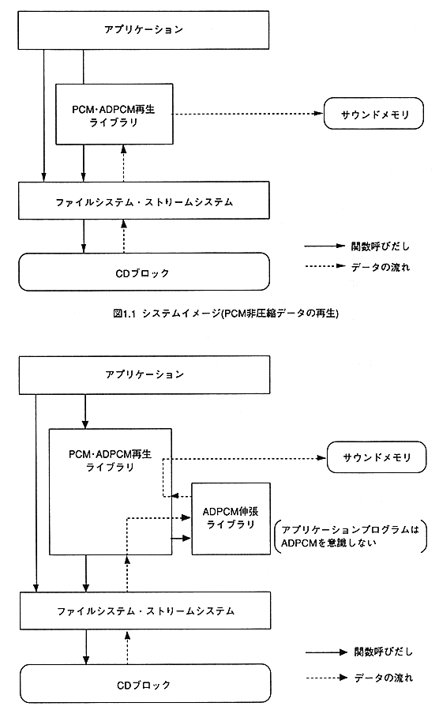

Return to previous page ｜ Return to menu ｜ Go to next page
-
1.3 System image
- The following figure shows the system image of this library.

Figure 1.2 System image (playback of ADPCM compressed data)
Return to previous page ｜ Return to menu ｜ Go to next page